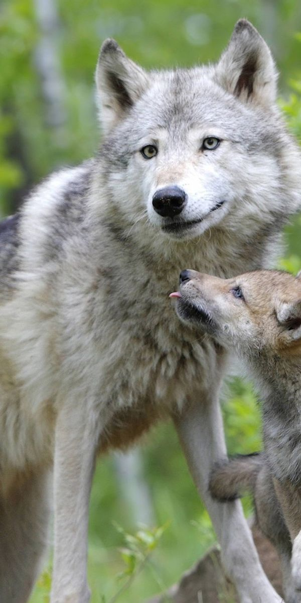
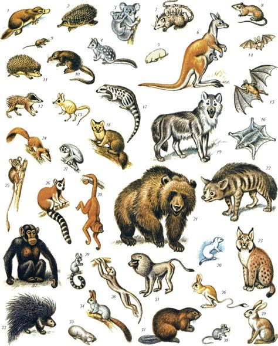

Ссавці є групою хребетних тварин, які вигодовують дитинчат молоком. Для них характерна стала температура тіла, наявність волосяного покриву та добре розвинена нервова система. Більшість ссавців турбується про потомство після народження, навчає його знаходити їжу, захищатися від небезпек і пристосовуватися до умов навколишнього середовища.
До диких ссавців належать вовки, лисиці, ведмеді та багато інших тварин. Вони відрізняються розмірами, способом живлення, будовою тіла й поведінкою. Одні види живуть поодинці, а інші об'єднуються в зграї або родини, у яких спільно шукають їжу, виховують молодняк і захищають свою територію.
Вони живуть у різних природних середовищах, мають добре розвинені органи чуття та пристосування до самостійного життя. У лісах ссавці використовують густу рослинність як укриття, у степах пристосовуються до відкритого простору, а в гірських районах витримують значні перепади температури. Дикі тварини є важливою частиною природних екосистем, тому їх охорона допомагає зберігати рівновагу в довкіллі.